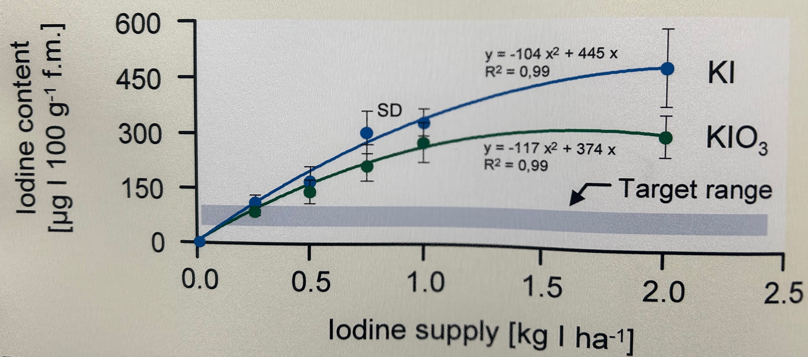

pacman::p_load(tidyverse, magrittr, readxl, ggmosaic,
janitor, see, patchwork, latex2exp,
conflicted)
conflicts_prefer(dplyr::summarise)
conflicts_prefer(dplyr::filter)
conflicts_prefer(latex2exp::TeX)16 Visualisierung von Daten
Letzte Änderung am 15. October 2023 um 18:33:55
“The greatest value of a picture is when it forces us to notice what we never expected to see.” — John Tukey
Worum geht es in der explorativen Datenanalyse? Die explorative Datenanalyse wurde von John Tukey (1915–2000) begründet. Er war ein Pionier im Bereich der frühen Informatik und Computerwissenschaften. Warum explorativ, was wollen wir den erforschen? Denn nichts anderes bedeutet ja explorativ (deu. erforschend, erkundend, untersuchend) – wir wollen etwas entdecken. Die Idee war ziemlich innovativ und neu als Tukey u. a. (1977) in seinem Buch die explorative Datenanalyse erstmal als Begriff vorstellte. Schon vorher beschrieb Tukey (1962) in seinem Artikel “The Future of Data Analysis” die zukünftige Datenanalyse, wie Tukey sie sich vorstellte, was auch sein folgendes Zitat belegt.
“I know of no person or group that is taking nearly adequate advantage of the graphical potentialities of the computer.” — John Tukey
Nun musst du wissen, dass in den 60’ziger Jahren der Computer in den Kinderschuhen steckte. Mal eben eine Berechnung durchführen, dass war dann schon so eine Sache der damaligen Zeit. Vieles bis fast alles wurde als Tabellen veröffentlicht und selten wurde eine Abbildung händisch dazu erstellt. An dieser Stelle sei einmal auf die Microsoft Excel Werbung aus dem Jahr 1990 verwiesen. Daher war die Idee, sich Daten zu visualisieren entsprechend neu und wirklich ein wissenschaftlicher Fortschritt. Erstaunlicherweise glauben wir heute manchmal dann Zahlen in einer Tabelle mehr als einer Abbildung. Wir schreiben dann den Zahlen eine größere Genauigkeit und Aussagekraft zu, als einer explorativen Abbildung. Dabei können wir in einer Abbildung viel mehr sehen, als in einer Tabelle.
“There is no data that can be displayed in a pie chart, that cannot be displayed BETTER in some other type of chart.” — John Tukey

Daher ist ein wichtiger Teil in der Analyse von Daten die Visualisierung und damit die Darstellung in einer Abbildung. Wir haben aber eine großem Auswahl an möglichen Abbildungen, deshalb auch das lange Kapitel hier. Wir glauben keiner Auswertung eines mathematischen Algorithmus, wenn wir nicht die Bestätigung in einer Abbildung sehen. Wenn wir also einen signifikanten Unterschied aus einem Algorithmus wiedergegeben bekommen, dann müssen wir auch den Unterschied in einer Abbildung sehen können. Eine statistische Analyse und deren Visualisierung gehen Hand in Hand. Daher ist die Visualisierung die Grundlage für ein fundiertes, wissenschaftliches Arbeiten. In diesem Kapitel stelle ich dir verschiedene Abbildungen vor, die uns helfen werden zu Verstehen ob es einen Zusammenhang zwischen \(y\) und \(x\) gibt. Wir haben ein \(y\) vorliegen, was wir auf die y-Achse eines Graphen legen und daneben dann mehrere Variablen bzw. Spalten die wir \(x\) nennen. Eine der Variablen legen wir auf die x-Achse des Graphen. Nach den anderen \(x\) färben wir die Abbildung ein. Wir nennen dabei eine Abbildung auch häufig Plot. Das ist der englische Begriff und hat nichts in unserem Kontext mit einer Fläche zu tun.
In diesem Kapitel wollen wir durch die häufigsten und wichtigsten Abbildungen in der explorativen Datenanalyse durchgehen. Das wären im folgenden diese Abbildungen:
- Barplot in Kapitel 16.3.1 für 5 und mehr Beobachtungen (pro Gruppe). Der Barplot oder das Balkendiagramm bzw. Säulendiagramm stellt den Mittelwert und die Standardabweichung da.
- Boxplot in Kapitel 16.3.2 für 5 bis 20 Beobachtungen (pro Gruppe). Ebenso wie bei einem Histogramm, geht es bei einem Boxplot auch um die Verteilung der einer Variable. Wir können in einem Boxplot auch erkennen, ob sogenannte auffällige Werte oder Ausreißer vorliegen.
- Histogramm in Kapitel 16.3.3 für mehr als 20 Beobachtungen (pro Gruppe). Wir nutzen ein Histogramm um die Verteilung einer Variable zu visualisieren.
- Scatterplot in Kapitel 16.3.5 für zwei kontinuierliche Variablen. Auch xy-Plot genannt. Die Abbildung, die dir bekannt sein müsste. Wir zeichnen hier eine Grade durch eine Punktewolke.
- Dotplot in Kapitel 16.3.6 für 3 bis 5 Beobachtungen (pro Gruppe). Hier geht es weniger um die Verteilung der Variable, sondern darum die wenigen Beobachtungen zu visualisieren.
- Mosaicplot in Kapitel 16.3.7 für zwei diskrete Variablen. Eine etwas seltene Abbildung, wenn wir Variablen abbilden wollen, die diskret sind bzw. aus Kategorien bestehen.
Beginnen wir also mit dem Teil, der in der Statistik der mir immer am meisten Spaß macht. Oder aber um es in den Worten von John Tukey, den Begründer der explorativen Datenanaklyse zu sagen:
“This is my favorite part about analytics: Taking boring flat data and bringing it to life through visualization.” — John Tukey
Oder du baust dir gleich die Abbildungen so wie die BBC mit dem Tutorium How to create BBC style graphics.
16.1 Genutzte R Pakete
Wir wollen folgende R Pakete in diesem Kapitel nutzen.
Am Ende des Kapitels findest du nochmal den gesamten R Code in einem Rutsch zum selber durchführen oder aber kopieren.
16.2 Grundlagen in ggplot()
“Numerical quantities focus on expected values, graphical summaries on unexpected values.” — John Tukey
Wir nutzen in R das R Paket ggplot2 um unsere Daten zu visualisieren. Die zentrale Idee von ggplot2 ist, dass wir uns eine Abbildung wie ein Sandwich bauen. Zuerst legen wir eine Scheibe Brot hin und legen uns dann Scheibe für Scheibe weitere Schichten übereinander. Oder die Idee eines Bildes, wo wir erst die Leinwand definieren und dann Farbschicht über Farbschicht auftragen. Im Gegensatz zu dem Pipe-Operator %>% nutzt ggplot2 den Operator + um die verschiedenen Funktionen (geom_) miteinander zu verbinden. Das Konzept von ggplot2ist schlecht zu beschreiben deshalb habe ich auch noch zwei Videos hierfür gemacht. Um den Prozess von ggplot2 zu visualisieren - aber wie immer, nutze was du brauchst.
Grundlagen von ggplot() im Video
Du findest auf YouTube Einführung in R - Teil 16.0 - Trockenübung ggplot2 simpel und einfach erklärt als Video. Sowie dann auch auf YouTube Einführung in R - Teil 16.1 - Abbildungen mit ggplot in R erstellen. Idee und Konzept von ggplot als Video. Also alles nochmal als Video - vielleicht einfacher nachzuvollziehen als in einem Fließtext.
Die Funktion ggplot() ist die zentrale Funktion, die die Leinwand erschafft auf der wir dann verschiedene Schichten aufbringen werden. Diese Schichten heißen geom. Es gibt nicht nur ein geom sondern mehrere. Zum Beispiel das geom_boxplot() für die Erstellung von Boxplots, das geom_histogram() für die Erstellung von Histogrammen. Die Auswahl ist riesig. Die einzelnen Schichten werden dann über den Operator + miteinander verbunden. Soviel erstmal zur Trockenübung. Schauen wir uns das ganze einmal an einem Beispiel an. Dafür müssen wir dann erstmal einen Datensatz laden, damit wir auch etwas zum abbilden haben.
Cheat Sheets in R als tolle Zusammenfassung und Hilfe
Schaue dir auch als Überblick einmal das Data visualization with ggplot2 :: Cheat Sheet an. Du kriegst dann nochmal ein Überblick über die geome, die es gibt und wie die einzelnen Funktionen und Möglichkeiten miteinander interagieren. Du kannst dir das Cheat Sheet auch auf Deutsch runterladen.
16.2.1 Datenbeispiel
Wir importieren den Datensatz flea_cat_dog.xlsx und wollen einzelne Variablen visualisieren. Wir kennen den Datensatz schon aus den vorherigen Beispielen. Dennoch nochmal hier der Datensatz in Tabelle 16.1 einmal dargestellt.
flea_dog_cat_tbl <- read_excel("data/flea_dog_cat.xlsx") %>%
mutate(animal = as_factor(animal))Im Folgenden ist es wichtig, dass du dir die Spaltennamen merkst. Wir können nur die exakten, wortwörtlichen Spaltennamen verwenden. Sonst erhalten wir einen Fehler. Deshalb haben wir auch keine Leerzeichen in den Spaltennamen.
| animal | jump_length | flea_count | weight | grade | infected |
|---|---|---|---|---|---|
| dog | 5.7 | 18 | 2.1 | 8 | 0 |
| dog | 8.9 | 22 | 2.3 | 8 | 1 |
| dog | 11.8 | 17 | 2.8 | 6 | 1 |
| dog | 5.6 | 12 | 2.4 | 8 | 0 |
| dog | 9.1 | 23 | 1.2 | 7 | 1 |
| dog | 8.2 | 18 | 4.1 | 7 | 0 |
| dog | 7.6 | 21 | 3.2 | 9 | 0 |
| cat | 3.2 | 12 | 1.1 | 7 | 1 |
| cat | 2.2 | 13 | 2.1 | 5 | 0 |
| cat | 5.4 | 11 | 2.4 | 7 | 0 |
| cat | 4.1 | 12 | 2.1 | 6 | 0 |
| cat | 4.3 | 16 | 1.5 | 6 | 1 |
| cat | 7.9 | 9 | 3.7 | 6 | 0 |
| cat | 6.1 | 7 | 2.9 | 5 | 0 |
16.2.2 Erste Abbildung in ggplot()
Erstellen wir also erstmal unseren erste Visualisierung in ggplot(). Wie immer empfehle ich dir dann auch das entsprechende Video auf YouTube anzuschauen. In Textform ist eine echte Herausforderung zu erklären wie man Plots baut. Der folgende R Code erstellt die Leinwand in der Abbildung 16.2 für die folgende, zusätzliches Schichten (geom). Wir haben also immer erst eine leere Leinwand auf der wir dann zusätzlich geome plotten. Wir bauen uns sozusagen ein Sandwich.
ggplot(data = flea_dog_cat_tbl,
aes(x = animal , y = jump_length)) +
theme_bw()Wir schauen uns einmal den Code im Detail an.
ggplotruft die Funktion auf. Die Funktion ist dafür da den Plot zu zeichnen.data = flea_dog_cat_tblbenennt den Datensatz aus dem der Plot gebaut werden soll.aes()ist die Abkürzung für aesthetics und beschreibt, was auf die \(x\)-Achse soll, was auf die \(y\)-Achse soll sowie ob es noch andere Faktoren in den Daten gibt. Wir können nämlich noch nach anderen Spalten die Abbildung einfärben oder anderweitig ändern.xbraucht den Spaltennamen für die Variable auf der \(x\)-Achse.ybraucht den Spaltennamen für die Variable auf der \(y\)-Achse.
+ theme_bw()setzt das Canvas oder die Leinwand auf schwarz/weiß. Sonst wäre die Leinwand flächig grau.
Mit Faktoren meine ich hier andere Gruppenvariablen. Variablen sind ein anderes Wort für Spalten. Also Variablen die wir mit as_factor erschaffen haben und die uns noch mehr über unsere Daten dann verraten können. Hier ist es dann etwas abstrakt, aber es wird dann später in der Anwendung klarer.

animal und jump_length aus dem Datensatz flea_dog_cat_tbl.Am Ende sehen wir, dass wir nichts sehen. In der Abbildung 16.2 ist nichts dargestellt. Der Grund ist, dass wir noch kein geom hinzugefügt haben. Das geom beschreibt nun wie die Zahlen in der Datentabelle flea_dog_cat_tbl visualisiert werden sollen. Wir habe eine sehr große Auswahl an geomen, deshalb gibt es gleich einmal eine Auswahl an Abbildungen.
16.3 Die häufigsten Abbildungen
Im Folgenden gehen wir dann einmal die wichtigsten Abbildungen einmal durch. Viele der Abbildungen kennst du vielleicht schon und dann musst du hier nur noch schauen, wie die Abbildungen in ggplot zu realisieren sind. Ansonsten gilt wie immer, es ist nur ein kleiner Ausschnitt, du findest auf der Hilfeseite von ggplot eine sehr viel größere Übersicht.
Histogramm, Boxplot, Scatterplot und Mosaicplot im Video
Du findest auf YouTube Einführung in R - Teil 16.2 - Histogramm, Boxplot, Scatterplot und Mosaicplot mit ggplot in R als Video. Weitere Videos werden dann noch folgen und ergänzt.
16.3.1 Barplot oder Balkendiagramm oder Säulendiagramm
Der Barplot oder das Balkendiagramm auch Säulendiagramm ist eigentlich veraltet. Wir haben mit dem Boxplot eine viel bessere Methode um eine Verteilung und gleichzeitig auch die Gruppenunterschiede zu visualisieren. Warum nutzen wir jetzt so viel den Barplot? Das hat damit zu tun, dass früher - oder besser bis vor kurzem - in Excel kein Boxplot möglich war. Daher nutzte jeder der mit Excel seine Daten auswertet den Barplot. Und was der Bauer nicht kennt… deshalb ist hier auch der Barplot dargestellt. Ich persönlich mag den Barplot eher weniger. Der Barplot ist einfach schlechter als der Boxplot. Wir haben nur die Standardabweichung als Maßzahl für die Streuung. Beim Boxplot haben wir das IQR, was uns mehr über die Streuung aussagt. Aber gut, häufig musst du den Barplot in deiner Abschlussarbeit machen. Also dann hier der Barplot. Wie erstellen wir nun einen Barplot in R? Zuerst laden wir die Daten mit der Funktion read_excel() in R, wenn du die Daten als .xlsx Datei vorliegen hast.
flea_dog_cat_tbl <- read_excel("data/flea_dog_cat.xlsx")Wir müssen jetzt für ggplot() noch den Mittelwert und die Streuung für die Gruppen berechnen. Du kannst als Streuung die Standardabweichung oder den Standardfehler nehmen. Ich würde die Standardabweichung bei kleinen Fallzahlen kleiner als 20 Beobachtungen nehmen.
stat_tbl <- flea_dog_cat_tbl %>%
group_by(animal) %>%
summarise(mean = mean(jump_length),
sd = sd(jump_length),
se = sd/sqrt(n()))Wir nutzen nun das Objekt stat_tbl um den Barplot mit der Funktion ggplot() zu erstellen. Dabei müssen wir zum einen schauen, dass die Balken nicht übereinander angeordnet sind. Nebeneinander angeordnete Balken kriegen wir mit der Option stat = "identity" in dem geom_bar(). Dann müssen wir noch die Fehlerbalken ergänzen mit dem geom_errorbar. Hier kann nochmal mit der Option width = an der Länge der Fehlerenden gedreht werden.
ggplot(stat_tbl, aes(x = animal, y = mean, fill = animal)) +
theme_bw() +
geom_bar(stat = "identity") +
geom_errorbar(aes(ymin = mean-sd, ymax = mean+sd),
width = 0.2)
Schau doch auch mal in den ein oder anderen Zerforschenkasten, da findest du dann noch mehr Inspiration aus anderen Abbildungen, die ich nachgebaut habe.
Zerforschen: Einfaktorieller Barplot
In diesem Zerforschenbeispiel wollen wir uns einen einfaktoriellen Barplot oder Säulendiagramm anschauen. Daher fangen wir mit der Abbildung 16.3 einmal an. Wir haben hier ein Säulendiagramm mit Compact letter display vorliegen. Daher brauchen wir eigentlich gar nicht so viele Zahlen. Für jede der vier Behandlungen jeweils einmal einen Mittelwert für die Höhe der Säule sowie einmal die Standardabweichung. Die Standardabweichung addieren und subtrahieren wir dann jeweils von dem Mittelwert und schon haben wir die Fehlerbalken.

Als erstes brauchen wir die Daten. Die Daten habe ich mir in dem Datensatz zerforschen_barplot_simple.xlsx selber ausgedacht. Ich habe einfach die Abbildung 16.3 genommen und den Mittelwert abgeschätzt. Dann habe ich die vier Werte alle um den Mittelwert streuen lassen. Dabei habe ich darauf geachtet, dass die Streuung dann in der letzten Behandlung am größten ist. Da wir beim Einlesen keine Umlaute oder sonstige Leerzeichen wollen, habe ich alles sehr simple aufgeschrieben und dann in R in der Funktion factor() richtig über die Option levels sortiert und über die Option labels sauber beschrieben. Dann passt auch die Sortierung der \(x\)-Achse.
barplot_tbl <- read_excel("data/zerforschen_barplot_simple.xlsx") %>%
mutate(trt = factor(trt,
levels = c("water", "rqflex",
"nitra", "laqua"),
labels = c("Wasserdestilation",
"RQflex Nitra",
"Nitrachek",
"Laqua Nitrat")))
barplot_tbl # A tibble: 16 × 2
trt nitrat
<fct> <dbl>
1 Wasserdestilation 135
2 Wasserdestilation 130
3 Wasserdestilation 145
4 Wasserdestilation 135
5 RQflex Nitra 120
6 RQflex Nitra 130
7 RQflex Nitra 135
8 RQflex Nitra 135
9 Nitrachek 100
10 Nitrachek 120
11 Nitrachek 130
12 Nitrachek 130
13 Laqua Nitrat 230
14 Laqua Nitrat 210
15 Laqua Nitrat 205
16 Laqua Nitrat 220Jetzt brauchen wir noch die Mittelwerte und die Standardabweichung für jede der vier Behandlungen. Den Code kennst du schon von oben wo wir die Barplots für die Sprungweiten der Hunde- und Katzenflöhe gebaut haben. Hier habe ich dann den Code entsprechen der Daten barplot_tbl angepasst. Wir haben ja als Gruppierungsvariabel trt vorliegen und wollen die Mittelwerte und die Standardabweichung für die Variable nitrat berechnen.
stat_tbl <- barplot_tbl %>%
group_by(trt) %>%
summarise(mean = mean(nitrat),
sd = sd(nitrat))
stat_tbl# A tibble: 4 × 3
trt mean sd
<fct> <dbl> <dbl>
1 Wasserdestilation 136. 6.29
2 RQflex Nitra 130 7.07
3 Nitrachek 120 14.1
4 Laqua Nitrat 216. 11.1 Und dann haben wir auch schon die Abbildung 16.4 erstellt. Ja vielleicht passen die Standardabweichungen nicht so richtig, da könnte man nochmal an den Daten speilen und die Werte solange ändern, bis es besser passt. Du hast aber jetzt eine Idee, wie der Aufbau funktioniert.
ggplot(data = stat_tbl, aes(x = trt, y = mean,
fill = trt)) +
theme_bw() +
geom_bar(stat = "identity") +
geom_errorbar(aes(ymin = mean-sd, ymax = mean+sd),
width = 0.2) +
labs(x = "",
y = "Nitrat-Konzentration \n im Tannensaft [mg/L]") +
ylim(0, 250) +
theme(legend.position = "none") +
scale_fill_okabeito() +
annotate("text",
x = c(1.05, 2.05, 3.05, 4.05),
y = stat_tbl$mean + stat_tbl$sd + 8,
label = c("b", "b", "a", "c"))- 1
- Hier werden die Säulen des Säulendiagramms erstellt.
- 2
-
Hier werden die Fehlerbalken erstellt. Die Option
widthsteuert wie breit die Fehlerbalken sind. - 3
- Hier wird eine Farbpalette für farbblinde Personen geladen.

ggplot nachgebaut.Am Ende kannst du dann folgenden Code noch hinter deine Abbildung ausführen um dann deine Abbildung als *.png-Datei zu speichern. Dann hast du die Abbildung super nachgebaut und sie sieht auch wirklich besser aus.
ggsave("my_ggplot_barplot.png", width = 5, height = 3)16.3.2 Boxplot
Mit dem Boxplot können wir den Median und die Quartile visualisieren. In Abbildung 16.5 sehen wir einen Boxplot, der den Median und die Quartile visualisiert. Die Box wird aus dem IQR gebildet. Der Median wird als Strich in der Box gezeigt. Die Schnurrhaare (eng. Whiskers) sind das 1.5 fache des IQR. Punkte die außerhalb der Schnurrhaare liegen werden als einzelne Punkte dargestellt. Diese einzelnen Punkte werden auch als Ausreißer (eng. Outlier) bezeichnet.

In Abbildung 16.6 sehen wir den Zusammenhang zwischen einem Histogramm, Densityplot und dem Boxplot. Der Median \(\tilde{y}\) im Boxplot zeigt die höchste Stelle des Densityplots an. Durch einen Boxplot kann die Verteilung der entsprechenden Zahlen abgeschätzt werden.

Die “liegende” Darstellung des Boxplots dient nur der Veranschaulichung und dem Verständnis des Zusammenhangs von Histogramm und Boxplot. In der Abbildung 16.7 sehen wir drei Boxplots für einen Faktor mit drei Leveln. Jedes Level wird duch einen Boxplot dargestellt. Zum Beispiel eine Düngerbehandlung mit drei Konzentrationen. Auf der x-Achse würden wir die Behandelung finden und auf der y-Achse das Trockengewicht in [kg/ha].

Wie erstellen wir nun einen Boxplot in R? Zuerst laden wir die Daten mit der Funktion read_excel() in R, wenn du die Daten als .xlsx Datei vorliegen hast. Im XX kannst du nochmal das Importieren von Daten wiederholen.
flea_dog_cat_tbl <- read_excel("data/flea_dog_cat.xlsx")
In Abbildung 16.8 ist der Boxplot für die Daten aus der Datei flea_dog_cat.xlsx dargestellt. Auf der x-Achse finden wir die Tierart als cat und dog. Auf der y-Achse ist die Sprungweite in [cm] dargestellt.
Wir erkennen auf einen Blick, dass die Sprungweite von den Hundeflöhen weiter ist als die Sprungweite der Katzenflöhe. Im Weiteren können wir abschätzen, dass die Streuung etwa gleich groß ist. Die Boxen sind in etwa gleich groß und die Whiskers in etwa gleich lang.
ggplot(data = flea_dog_cat_tbl, aes(x = animal, y = jump_length,
fill = animal)) +
geom_boxplot() +
geom_jitter(width = 0.25, shape = 1) +
theme_bw() +
labs(x = "Tierart", y = "Sprungweite [cm]") 
Wir neigen dazu die Boxplots über zu interpretieren, wenn die Anzahl der Beobachtungen klein ist. Deshalb können wir mit dem geom_jitter() noch die Beobachtungen zu den Boxplot ergänzen, dargestellt in Abbildung 16.9. Die Funktion geom_jitter() streut die Punkte zufällig, so dass keine Punkte übereinander liegen. Wir haben hier die Streuweite durch die Option width = 0.25 etwas eingeschränkt. Darüber hinaus habe wir das Aussehen der Punkte mit shape = 1 geändert, so dass wir die Jitter-Punkte von den potenziellen Ausreißer-Punkten unterscheiden können. Du kannst auch andere Zahlen hinter shape eintragen um verschiedene Punktesymbole durch zuprobieren. Eine Übersicht an shapes findest du auch hier unter Cookbook for R > Graphs > Shapes and line types.
16.3.3 Histogramm
Wir nutzen für die Erstellung eines Histogramms den Datensatz dog_fleas_hist.csv. Wir brauchen für ein anständiges Histogramm, wo du auch was erkennen kannst, mindestens 20 Beobachtung. Am besten mehr noch mhr Beobachtungen. Deshalb schauen wir uns jetzt einmal 39 Hunde an und zählen wieviele Flöhe die Hunde jeweils haben, dargestellt in der Spalteflea_count. Darüber hinaus bestimmen wir auch noch das mittlere Gewicht der Flöhe auf dem jeweiligen Hund, dargestellt in der Spalte flea_weight.
dog_fleas_hist_tbl <- read_csv("data/dog_fleas_hist.csv")
Für die vollständige Datentabelle bitte aufklappen
| flea_count | flea_weight |
|---|---|
| 0 | 0.00 |
| 1 | 7.43 |
| 4 | 21.04 |
| 2 | 20.07 |
| 1 | 21.90 |
| 0 | 0.00 |
| 2 | 24.96 |
| 1 | 27.08 |
| 5 | 16.58 |
| 1 | 19.92 |
| 0 | 0.00 |
| 0 | 0.00 |
| 2 | 24.63 |
| 4 | 21.64 |
| 3 | 20.97 |
| 1 | 23.15 |
| 0 | 0.00 |
| 3 | 14.91 |
| 1 | 19.39 |
| 2 | 17.66 |
| 1 | 19.15 |
| 1 | 25.10 |
| 2 | 26.38 |
| 2 | 19.33 |
| 2 | 13.29 |
| 1 | 17.81 |
| 0 | 0.00 |
| 2 | 23.56 |
| 1 | 18.64 |
| 1 | 15.64 |
| 3 | 19.88 |
| 1 | 18.40 |
| 1 | 25.17 |
| 0 | 0.00 |
| 0 | 0.00 |
Die Tabelle 16.2 zeigt den Datensatz dog_fleas_hist.csv. Du musst oben einmal den blauen Kasten aufklappen, um die vollständige Datentabelle zu sehen. Wir wollen jetzt die Variable flea_count und flea_weight jeweils abbilden. Wir beginnen mit der diskreten Variable flea_count. Im Gegensatz zu der Variable flea_weight haben wir bei der Anzahl gleiche Zahlen vorliegen, die wir dann zusammen darstellen können. Abbildung 16.10 zeigt die Darstellung der Tabelle. Auf der x-Achse ist die Anzahl an Flöhen dargestellt. Auf der y-Achse die Anzahl der jeweiligen Anzahl an Flöhen. Das klingt jetzt etwas schief, aber schauen wir uns die Abbilung näher an.

Wir sehen in Abbildung 16.10 das acht Hunde keine Flöhe hatten - also eine Anzahl an Flöhen von 0. Auf der anderen Seite hatten zwei Hunde vier Flöhe und ein Hund hatte sogar fünf Flöhe. Wir sehen also die Verteilung der Anzahl an Flöhen über alle unsere 39 Hundebeobachtungen.
Wir schauen uns aber die Verteilung der Anzahl an Flöhen meist nicht in der Form von gestapelten Punkten an, sondern in der Form eines Histogramms also einem Balkendiagramm. Abbildung 16.11 zeigt das Histogramm für die Anzahl der Flöhe.
ggplot(data = dog_fleas_hist_tbl, aes(x = flea_count)) +
geom_histogram(binwidth = 1, fill = "gray", color = "black") +
theme_bw() +
labs(x = "Anzahl Flöhe", y = "Anzahl") 
Was sehen wir in der Abbildung 16.11? Anstatt von gestapelten Punkten sehen wir jetzt Balken, die die jeweilige Anzahl an Flöhen zusammenfassen. Der Unterschied ist bei einer diskreten Variable wie der Anzahl (eng. count) relativ gering.
Anders sieht es für kontenuierliche Variablen mit Kommazahlen aus. Schauen wir uns das Gewicht der Flöhe an, so sehen wir, dass es sehr viele Zahlen gibt, die nur einmal vorkomen. Abbildung 16.12 zeigt das Histogramm für das Geicht der Flöhe.
ggplot(data = dog_fleas_hist_tbl, aes(x = flea_weight)) +
geom_histogram(binwidth = 1, fill = "gray", color = "black") +
theme_bw() +
labs(x = "Gewicht [mg]", y = "Anzahl") 
Wie entsteht nun ein Hisotgramm für konetnierliche Zahlen? Schauen wir uns dafür einmal ein kleineres Datenbeispiel an, in dem wir nur Flöhe mit einem Gewicht größer als 11 und kleiner als 19 wäheln. Wir nutzen dazu die Funktion filter(flea_weight > 11 & flea_weight < 19). Wir erhalten folgende Zahlen und das entsprechende Histogramm.
[1] 13.29 14.91 15.64 16.58 17.66 17.81 18.40 18.64
Abbildung 16.13 zeigt das Histogramm der reduzierten Daten. Die roten vertikalen Linien zeigen die Position der einzelnen Flohgewichte auf der x-Achse. Die blauen Hilfslinien machen nochmal klarer, wie hoch die einzelnen Balken sind sowie welche Beobachtungen auf der x-Achse in den jeweiligen Balken mit eingehen. Wir sehen, dass wir einen Hund mit Flöhen haben, die zwischen 12.5 und 13.5 wiegen - der entsprechende Balken erhält die Anzahl von eins. Auf der anderen Seite sehen wir, dass es drei Hunde mit Flöhen, die zwischen 17.5 und 18.5 wiegen. Daher wächst der Balken auf eine Anzahl von drei.
Wir können mit der Option binwidth in dem geom_histogram() einstellen, wie breit auf der x-Achse die jeweiligen Balken sein sollen. Hier empfiehlt es sich verschiedene Zahlen für binwidthauszuprobieren.
16.3.4 Density Plot
Eine weitere Möglichkeit sich eine Verteilung anzuschauen, ist die Daten nicht als Balkendiagramm sondern als Densityplot - also Dichteverteilung - anzusehen. Im Prinzip verwandeln wir die Balken in eine Kurve. Damit würden wir im Prinzip unterschiedliche Balkenhöhen ausgleichen udn eine “glattere” Darstellung erreichen. Wir wir aber gleich sehen werden, benötigen wir dazu eine Menge an Beoabchtungen und auch dann ist das Ergebnis eventuell nicht gut zu interpretieren.
ggplot(data = dog_fleas_hist_tbl, aes(x = flea_count)) +
geom_histogram(binwidth = 1, fill = "gray", color = "black") +
theme_bw() +
labs(x = "Anzahl Flöhe", y = "Anzahl")
ggplot(data = dog_fleas_hist_tbl, aes(x = flea_count)) +
geom_density(fill = "gray", color = "black") +
theme_bw() +
labs(x = "Anzahl Flöhe", y = "Häufigkeit") 

Abbildung 16.14 zeigt auf der linken Seite erneut die Abbildung des Histogramms als Balkendiagramm für die Anzahl der Flöhe auf den 39 Hunden. Auf der rechten Seite die entsprechenden gleichen Daten als Denistyplot. Klar ist die Wellenbewegung des Densityplots zu erkennen. Hier leigen zu wenige Beobachtungen und Kategorien auf der x-Achse vor, so dass der Densityplot nicht zu empfehlen ist.
ggplot(data = dog_fleas_hist_tbl, aes(x = flea_weight)) +
geom_histogram(binwidth = 1, fill = "gray", color = "black") +
theme_bw() +
labs(x = "Gewicht [mg]", y = "Anzahl")
ggplot(data = dog_fleas_hist_tbl, aes(x = flea_weight)) +
geom_density(fill = "gray", color = "black") +
theme_bw() +
labs(x = "Gewicht [mg]", y = "Häufigkeit") 

Abbildung 16.15 zeigt auf der linken Seite erneut die Abbildung des Histogramms als Balkendiagramm für das Gewicht der Flöhe auf den 39 Hunden. Insbesondere bei dieser Abbildung erkennst du die Nachteile des Densityplot. Dadurch das es einen Peak von acht Hunden mit einem Flohgewicht von 0 gibt, zeigt der Densityplot eine seltsame Wellenform. Es emppfielt sich daher die Daten zuerst als Histogramm zu betrachten.
16.3.5 Scatterplot
Der Scatterplot wird auch xy-Plot genannt. Wir stellen in einem Scatterplot zwei kontenuierliche Variablen dar. Dann wollen wir eine Linie durch die Punkte legen. Im Prinzip fragen wir uns, wie hänge die Werte auf der y-Achse von den Werten auf der x-Achse ab? Wenn sich also die Werte auf der x-Achse erhöhen, wie verhalten sich dann die Werte auf der y-Achse?
ggplot(data = flea_dog_cat_tbl, aes(x = weight, y = jump_length,
color = animal)) +
geom_point() +
stat_smooth(method = "lm", se = FALSE) +
theme_bw() +
labs(x = "Gewicht der Flöhe [mg]", y = "Sprungweite in [cm]",
color = "Tierart") 
Die Abbildung 16.16 zeigt den Scatterplot für die Spalte weight auf der x-Achse und jump_length auf der y-Achse. Mit der Funktion geom_point() können wir die Punktepaare für jede Beobachtung zeichnen. In unserem Fall zeichnen wir mit der Funktion stat_smooth() noch die entsprechende Grade durch die Punkte. Es handelt sich hierbei um eine Regression, da wir eine Gerade durch die Punktewolke zeichnen.
16.3.6 Dotplot
Wenn wir weniger als fünf Beobachtungen haben, dann ist meist ein Boxplot verzerrend. Wir sehen eine Box und glauben, dass wir viele Datenpunkte vorliegen haben. Bei 3 bis 7 Beobachtungen je Gruppe bietet sich der Dotplot als eine Lösung an. Wir stellen hier alle Beobachtungen als einzelne Punkte dar. Wie erstellen wir nun einen Dotplot in R? Zuerst laden wir die Daten mit der Funktion read_excel() in R, wenn du die Daten als .xlsx Datei vorliegen hast.
flea_dog_cat_tbl <- read_excel("data/flea_dog_cat.xlsx")ggplot(data = flea_dog_cat_tbl, aes(x = animal, y = grade,
fill = animal)) +
geom_dotplot(binaxis = "y", stackdir = "center") +
theme_bw() +
labs(x = "Tierart", y = "Boniturnote [1-9]") 
In Abbildung 16.17 sehen wir den Dotplot aus der Datei flea_dog_cat.xlsx. Auf der x-Achse sind die Level des Faktors animal dargestellt und auf der y-Achse die Notenbewertung grade der einzelnen Hunde und Katzen. Die Funktion geom_dotplot() erschafft das Layer für die Dots bzw. Punkte. Wir müssen in der Funktion noch zwei Dinge angeben, damit der Plot so aussieht, dass wir den Dotplot gut interpretieren können. Zum einen müssen wir die Option binaxis = y wählen, damit die Punkte horizontal geordnet werden. Zum anderen wollen wir auch, dass die Punkte zentriert sind und nutzen dafür die Option stackdir = center.
ggplot(data = flea_dog_cat_tbl, aes(x = animal, y = grade,
fill = animal)) +
geom_dotplot(binaxis = "y", stackdir = "center") +
stat_summary(fun = median, fun.min = median, fun.max = median,
geom = "crossbar", width = 0.5) +
theme_bw() +
labs(x = "Tierart", y = "Boniturnote [1-9]") 
Nun macht es wenig Sinn bei sehr wenigen Beobachtungen noch statistische Maßzahlen mit in den Plot zu zeichnen. Sonst hätten wir auch gleich einen Boxplot als Visualisierung der Daten wählen können. In Abbildung 16.18 sehen wir die Ergänzung des Medians. Hier müssen wir etwas mehr angeben, aber immerhin haben wir so eine Idee, wo die “meisten” Beobachtungen wären. Aber auch hier ist Vorsicht geboten. Wir haben sehr wenige Beobachtungen, so dass eine Beobachtung mehr oder weniger große Auswirkungen auf den Median und die Interpretation hat.
16.3.7 Mosaic Plot
Wenn wir zwei Spalten visualisieren wollen, die aus zwei Faktoren bestehen mit jeweils zwei Leveln, dann nutzen wir den Mosaic Plot. Wir nutzen den Datensatz flea_dog_cat.xlsx mit vierzehn Beobachtungen. Zuerst drehen wir nochmal die Ordnung der Level in dem Faktor animal.
flea_dog_cat_mosaic_tbl <- flea_dog_cat_tbl %>%
mutate(animal = factor(animal, levels = c("dog", "cat"))) Schauen wir uns jetzt einmal die 2x2 Kreuztabelle der beiden Spalten animal and infected an. Um die 2x2 Tabelle in R in der richtigen Orientierung vorliegen zu haben, müssen wir nochmal einen kleinen Klimmzug über mutate() nehmen. Wir wandeln die Variable infected in einen Faktor um und sortieren die Level entsprechend, so dass wir die richtige Ordnung wie später im Mosaic Plot haben. Dieser Umweg hat nur didaktische Gründe, später plotten wir den Mosaic Plot direkt und schauen uns vorher nicht die 2x2 Tabelle in R an. Hier also die 2x2 Kreuztablle aus R.
flea_dog_cat_mosaic_tbl %>%
mutate(infected = factor(infected, levels = c(1, 0))) %>%
tabyl(infected, animal) infected dog cat
1 3 2
0 4 5Wir sehen in der Tabelle, dass wir mehr nicht infizierte Tiere (n = 9) als infizierte Tiere haben (n = 5). Die Aufteilung zwischen den beiden Tierarten ist nahezu gleich. Im folgenden wollen wir diese Tabelle durch einen Mosaic Plot einmal visualisieren.
Um jetzt einen Mosaic Plot zeichnen zu können müssen wir die relativen Anteile pro Spalte bzw. für jedes Level von \(x\) berechnen. In unserem Fall ist \(x\) die Variable animal und die Level sind dog und cat. In der folgenden 2x2 Kreuztablle werden die relativen Anteile für die Hunde- und Katzenflöhe für den Infektionsstatus berechnet.
| Animal | ||||
| Dog | Cat | |||
| Infected | Yes (1) | \(\cfrac{3}{7} = 0.43\) | \(\cfrac{2}{7} = 0.29\) | \(\mathbf{5}\) |
| No (0) | \(\cfrac{4}{7} = 0.57\) | \(\cfrac{5}{7} = 0.71\) | \(\mathbf{9}\) | |
| \(\mathbf{7}\) | \(\mathbf{7}\) | \(n = 14\) |
Wir können jetzt die relativen Anteile in den Mosaic Plot übertragen und erhalten die Abbildung 16.19. Wir müssen also zuerst die absoluten Anteile bestimmen um dann die relativen Anteile für die Spalten berechnen zu können. Abschließend zeichnen wir dann den Mosaic Plot. Wir nutzen dafür das R Paket ggmosaic mit der Funktion geom_mosaic().
ggplot(data = flea_dog_cat_mosaic_tbl) +
geom_mosaic(aes(x = product(infected, animal), fill = animal)) +
annotate("text", x = c(0.25, 0.25, 0.75, 0.75),
y = c(0.25, 0.75, 0.25, 0.85),
label = c("0.57", "0.43", "0.71", "0.29"), size = 7) +
theme(legend.position = "none")
Abbildung 16.19 zeigt den Mosaic Plot für die Variable animal and infected. Die untrschiedlich großen Flächen bilden die Verhältnisse der 2x2 Tabelle ab. So sehen wir, dass es mehr uninfizierte Tiere als infizierte Tiere gibt. Am meisten gibt es uninfizierte Katzen. Am wenigstens treten infizierte Katzen auf.
16.4 Zusätzliche Möglichkeiten
Im Folgenden dann noch eine Sammlung an nützlichen Optionen und Möglichkeiten, die einem das Leben einfacher machen und die Abbildungen dann noch schöner. Nicht alles musst du in ggplot machen, manchmal geht es dann in PowerPoint dann doch schneller mal eben einen Text zu ergänzen. Sehe das hier deshalb als Ergänzung und meinen privaten Raum, den ich nutze um mir den Code zu merken.
16.4.1 Überschriften, Achsen und Legenden
Wenn du mehr machen willst, also die Überschriften anpassen oder aber die Achsenbeschriftung ändern, dann gibt es hier global Hilfe im ggplot Manual. Die Webseite R Cookbook hat auch spezielle Hilfe für ggplot().
In Abbildung 16.20 siehst du eine Abbildung mit Titel und veränderten Beschriftungen. Die Möglichkeiten sind nahezu unbegrenzt und sprengen auch hier den Rahmen. Im Zweifel im R Tutorium vorbeischauen oder aber in der Vorlesung fragen.
ggplot(data = flea_dog_cat_tbl, aes(x = animal, y = jump_length,
fill = animal)) +
geom_boxplot() +
labs(title = "Frischgewicht in Abhängigkeit von der Behandlung",
x = "Behandlung", y = "Frischgewicht in kg/ha") +
scale_x_discrete(labels = c("Katze", "Hund")) +
scale_fill_discrete(name = "Behandlung", labels = c("Katze", "Hund")) +
theme_bw() 
16.4.2 Abbildungen abspeichern
Wenn du eine Abbildung abspeichern willst, dann musst du nur nach dem ggplot-Code die Funktion ggsave() setzen. Wie du im hier im Folgenden siehst, speichere ich die Abbildung der Boxplots der Hunde- und Katzenflöhe einmal in der Datei flea_dog_boxplot.png ab. Dabei wähle ich eine Breite width und eine Höhe height von jeweils 5. Du musst dann immer etwas spielen, je größer die Zahlen, desto größer die Abbildung und die Auflösung.
ggplot(data = flea_dog_cat_tbl,
aes(x = animal, y = jump_length)) +
geom_boxplot()
## Abspeichern des obigen ggplots
ggsave("flea_dog_boxplot.png", width = 5, height = 5)Wie immer hilft auch die Hilfeseite von ggsave() weiter, wenn es um mehr Optionen und Qualität der Abbildungen geht.
16.4.3 Mathematische Ausdrücke in den Achsenbeschriftungen
Häufig wollen wir nicht nur einfache Achsenbeschriftungen haben, sondern auch irgendwie komplexere Einheiten wie Eisendüngergehalt im Boden in \([kg\, ha]^{-1}\) darstellen. Jetzt soll die Einheit auch in dieser Form mit in die Achsenbeschriftung. Wir können dafür zwei Wege wählen. Einmal über das R Paket latex2exp und die Funktion TeX() oder aber die Funktion expression(), wofür wir dann kein eigenes R Paket brauchen. Beide Wege haben Vor- und Nachteile. Wir gehen aber beide mal durch.
Mehr Informationen durch das Tutorium Using latex2exp oder aber eben der Klassiker mit Plot math expression.
Wir können die Funktion expression() nutzen um uns mathematische Formeln zu bauen. Leider ist das Ganze etwas frickelig und auch ich brauche immer drei Anläufe, bis die Formel dann passt. Im Folgenden aber einmal zwei Beispiel für mathematische Formeln und Ausdrücke. Beachte, dass du jedes Leerzeichen durch eine Tilde ~ abbilden musst. Ich nutze die Funktion expression() sehr selten und nur wenn die Formel wirklich sehr einfach ist. Da wir aber schon mit eckigen Klammern Probleme kriegen und diese so nervig mit " einklammern müssen, nutze ich dann das Paket latex2exp was ich im Folgenden vorstellen werde.
Hier aber erstmal zwei Beispiele für eine Formel mit der Funktion expression(). Wenn du mehr über die Möglichkeiten wissen willst, dann schauen auch einmal auf die Hilfeseite von Plot math oder du googelst dir die Lösung wie ich früher zusammen.
plot(expression(Eisendüngeform~und~-höhe~"[kg ha]"^-1), cex = 1.5, main = "")
plot(expression(Fe-Gehalt~"["~mg%.%(kg~TM)^-1~"]"), cex = 1.5, main = "")
Für mich ausdrücklich einfacher geht es mit dem R Paket latex2exp und der Funktion TeX() sowie die Helferfunktion r"()". Ja, hier muss man dann noch eine andere Programmiersprache kennen, aber wie immer, du wirst nur schlauer. Die Informationen zur Matheumgebung in \(\LaTeX\) kommen dann nochmal extra zwischen zwei Dollarzeichen $. Ja, das ist etwas wirr für einen Anfänger, aber wir nutzen hier auch zwei Programmiersprachen zusammen. Zum einen \(\LaTeX\) um die Mathesymbole sauber darzustellen und dann R um die Abbildungen in ggplot() zu bauen. Mehr Informationen zu der Matheumgebung in \(\LaTeX\) findest du einmal in der LaTeX Mathehilfe I sowie der LaTeX Mathehilfe II.
Wie bauen wir uns also unseren mathematischen Ausdruck? Als erstes brauchen wir die Funktion Tex(), die sagt einfach nur aus, dass jetzt \(\LaTeX\)-Code kommt. Dann wollen wir noch einen String brauen in dem der \(\LaTeX\)-Code für unseren mathematischen Ausdruck drin steht. Diesen String bauen wir mit r"()". Achtung, hier ist das Gänsefüßchen oben und unten vor und nach der runden Klammer sehr wichtig. In den Ausdruck können wir dann Text schreiben Eisengehalt oder aber einen mathematischen Ausdruck abgrenzt von zwei Dollarzeichen $ wie $[kg\, ha]^{-1}$. \(\LaTeX\) kann nämlich nicht nur mathematische Ausdrücke sondern ist eigentlich ein Textverarbeitungsprogramm. Deshalb musst du hier nochmal zwischen Text und mathematischen Ausdruck unterscheiden.
Hier nochmal aufgeschlüsselt wie der Code aussieht. Wir schreiben den Code nachher in einer Zeile, aber zum Verständnis ist es besser, wenn wir den Code einmal aufgeklappt sehen.
TeX(
r"(
Eisengehalt $[kg\, ha]^{-1}$
)"
)Wir wollen uns das Ergebnis einmal in einem simplen plot() anschauen. Wir nutzen die Funktionalität natürlich später in ggplot, aber hier ist es so einmal einfacher zu sehen.
plot(cex = 2, main = "",
TeX(r"(
Eisengehalt $[kg\, ha]^{-1}$
)")
)
Auch können wir sehr viel komplexere Formeln erstellen. Beachte auch hier, dass wir zwei Matheumgebungen in \(\LaTeX\) vorliegen haben.
plot(cex = 2, main = "",
TeX(r"(
A $\LaTeX$ formula: $\frac{2hc^2}{\lambda^5}\frac{1}{e^{\frac{hc}{\lambda k_B T}} - 1}$
)")
)
In der Abbildung 16.21 dann nochmal die Anwendung in einem ggplot in dem wir die Achsen entsprechend beschriften und dann auch noch eine ausgedachte Regressionsgeleichung zu der Abbildung ergänzen.
ggplot(data = flea_dog_cat_tbl, aes(x = flea_count, y = jump_length)) +
geom_point() +
stat_smooth(method = "lm", se = FALSE) +
theme_bw() +
labs(x = TeX(r"(Eisengehalt und -höhe $[kg\, ha]^{-1}$)"),
y = TeX(r"(Fe-Gehalt $[mg \cdot (kg TM)^{-1}]$)")) +
annotate("text", x = 10, y = 10,
label = TeX(r"($y = \beta_0 + \beta_1 \cdot x;\; R^2 = 0.24$)"))
Workaround für
Tex() in geom_text()
Wenn du dann mal die Funktion Tex() in geom_text() verwenden willst, dann musst du einmal etwas anpassen. Dann klappt es aber auch hier. Das hat mich mal echt Nerven und Zeit gekostet, deshalb lagere ich die Information mal hier für mich.
ggplot() +
theme_void() +
geom_text(aes(0, 0,
label = TeX(r'($\alpha x^\alpha$, where $\alpha \in 1\ldots 5$)',
output = "character")), parse = TRUE) 
16.4.4 Die Okabe-Ito Farbpalette
Mehr zum R Paket see auf der Hilfeseite des Paketes
Neben den klassischen Farben im R Paket ggplotgibt es noch weit, weit mehr Farbpaletten. Wir nutzen in der Folge immer wieder die Okabe-Ito Farbpalette aus dem R Paket see. Die Okabe-Ito Farbpalette ist speziell so gebaut, dass die Farben sich gut für farbenblinde Personen unterscheiden. Der Kontrast zwischen den Farben ist sehr gut. Wenn du eine andere Farbpalette nutzen willst, findest du hier noch andere Color Scales.
ggplot(data = flea_dog_cat_tbl,
aes(x = animal, y = jump_length,
fill = animal)) +
geom_boxplot() +
scale_fill_okabeito() +
theme_bw()
ggplot(data = flea_dog_cat_tbl,
aes(x = animal, y = jump_length,
color = animal)) +
geom_point() +
scale_color_okabeito() +
theme_bw()
Das Ganze geht dann auch händisch mit dem folgenden Code für die jeweiligen Farben. Anbei einmal die Farbpalette dargestellt.

Die Farben sind dann in der Reihenfolge wie folgt kodiert.
cbbPalette <- c("#000000", "#E69F00", "#56B4E9", "#009E73",
"#F0E442", "#0072B2", "#D55E00", "#CC79A7")Wenn wir Boxplots einfärben wollen dann nehmen wir den folgenden Code.
scale_fill_manual(values = cbPalette)Und das hier ist die Ergänzung für Punkte und Linien.
scale_colour_manual(values = cbPalette)16.4.5 Abbildungen nebeneinander
Das R Paket patchwork erlaubt es mehrere ggplot Abbildungen nebeneinander oder in einem beliebigen Layout miteinander zu verbinden. Das tolle ist, dass die Idee sehr intutiv ist. Wir nutzen wieder das + um verschiedene Plots miteinander zu verbinden.
Im Folgenden erschaffen wir uns zwei ggplots und speichern die Plots in den Objekten p1 und p2. Das ist wie wir es bisher kennen, nur das jetzt keine Abbildung erscheint sondern beide Plots in zwei Objekten gespeichert sind.
p1 <- ggplot(data = flea_dog_cat_tbl,
aes(x = flea_count, y = jump_length,
color = animal)) +
geom_point() +
scale_color_okabeito() +
theme_bw()
p2 <- ggplot(data = flea_dog_cat_tbl,
aes(x = animal, y = jump_length,
color = animal)) +
geom_point() +
scale_color_okabeito() +
theme_bw()Wie können wir nun die beiden Abbildungen nebeneinander zeichnen? Wir nutzen einfach das + Symbol.
p1 + p2
Auf der Seite des R Paket patchwork findest du viel mehr Möglichkeiten das Layout anzupassen und auch die einzelnen Subplots zu beschriften.
16.5 Zerforschen
Am Ende des Kapitels wollen wir hier nochmal Abbildungen von Postern aus der Hochschule Osnabrück nachbauen. Ich habe die Fotos so aufgenommen, dass hier nicht direkt klar wird worum es geht, aber das ist ja auch irgendwie egal. Es geht um den Spaß und das Lernen. Natürlich lassen sich die Poster dann wiederfinden, aber nicht alle Poster bleiben ja auch ewig hängen. Hier geht es also darum mal zu lernen, wie so Abbildungen aufgebaut sind und wie wir die Abbildungen dann in ggplot nachbauen können. Ich finde es immer Augen öffnend hier nochmal die Abbildungen in Excel mit den wirklich schöneren Abbildungen aus R zu vergleichen.
Zerforschen: Simple lineare Regression


regression_tbl <- read_excel("data/zerforschen_regression_linear.xlsx") %>%
mutate(type = factor(type, labels = c("Basil", "Oregano")))
regression_tbl # A tibble: 40 × 3
type washed unwashed
<fct> <dbl> <dbl>
1 Basil 0 0
2 Basil 10 15
3 Basil 20 18
4 Basil 30 32
5 Basil 40 36
6 Basil 50 52
7 Basil 60 59
8 Basil 70 72
9 Basil 80 85
10 Basil 100 105
# ℹ 30 more rowsfit <- lm(unwashed ~ washed, data = filter(regression_tbl, type == "Basil"))
fit %>%
parameters::model_parameters() %>%
select(Parameter, Coefficient)# Fixed Effects
Parameter | Coefficient
-------------------------
(Intercept) | 2.10
washed | 1.00performance::r2(fit)# R2 for Linear Regression
R2: 0.994
adj. R2: 0.994fit <- lm(unwashed ~ washed, data = filter(regression_tbl, type == "Oregano"))
fit %>%
parameters::model_parameters() %>%
select(Parameter, Coefficient)# Fixed Effects
Parameter | Coefficient
-------------------------
(Intercept) | 8.17
washed | 0.99performance::r2(fit)# R2 for Linear Regression
R2: 0.997
adj. R2: 0.996basil_func <- \(x){2.10 + 1.00 * x}
oregano_func <- \(x){8.17 + 0.99 * x}filter(regression_tbl, type == "Basil") %>%
ggplot(aes(x = washed, y = unwashed, color = type)) +
theme_bw() +
geom_function(fun = basil_func, color = cbbPalette[2], linetype = 'dashed') +
geom_point(color = cbbPalette[2]) +
facet_wrap(~ type) +
scale_x_continuous(name = TeX(r"(Iodine content in \textbf{unwashed} herbs $[\mu g\, l \, (100 g\, FM)^{-1}]$)"),
breaks = seq(0, 600, 150)) +
scale_y_continuous(name = TeX(r"(Iodine content in \textbf{washed} herbs $[\mu g\, l \, (100 g\, FM)^{-1}]$)"),
breaks = seq(0, 600, 150)) +
theme(legend.position = "none") +
annotate("text", x = 150, y = 100, hjust = "left", color = cbbPalette[2],
label = TeX(r"($y = 2.10 + 1.00 \cdot x;\; R^2 = 0.99$)")) 
ggplot nachgebaut. Am Ende wurde es dann doch noch eine Legende und keine Beschriftung.filter(regression_tbl, type == "Oregano") %>%
ggplot(aes(x = washed, y = unwashed, color = type)) +
theme_bw() +
geom_function(fun = oregano_func, color = cbbPalette[3], linetype = 'dashed') +
geom_point(color = cbbPalette[3]) +
facet_wrap(~ type) +
scale_x_continuous(name = TeX(r"(Iodine content in \textbf{unwashed} herbs $[\mu g\, l \, (100 g\, FM)^{-1}]$)"),
breaks = seq(0, 900, 150)) +
scale_y_continuous(name = TeX(r"(Iodine content in \textbf{washed} herbs $[\mu g\, l \, (100 g\, FM)^{-1}]$)"),
breaks = seq(0, 900, 150)) +
theme(legend.position = "none") +
annotate("text", x = 150, y = 100, hjust = "left", color = cbbPalette[3],
label = TeX(r"($y = 8.17 + 0.99 \cdot x;\; R^2 = 0.99$)")) 
ggplot nachgebaut. Am Ende wurde es dann doch noch eine Legende und keine Beschriftung.Wir brauchen hier das R Paket grid
ggplot(data = regression_tbl, aes(x = washed, y = unwashed,
color = type)) +
theme_bw() +
scale_color_okabeito() +
geom_function(data = filter(regression_tbl, type == "Basil"),
fun = basil_func, color = cbbPalette[2], linetype = 'dashed') +
geom_function(data = filter(regression_tbl, type == "Oregano"),
fun = oregano_func, color = cbbPalette[3], linetype = 'dashed') +
geom_point() +
facet_wrap(~ type) +
scale_x_continuous(name = TeX(r"(Iodine content in \textbf{unwashed} herbs $[\mu g\, l \, (100 g\, FM)^{-1}]$)"),
breaks = seq(0, 900, 150)) +
scale_y_continuous(name = TeX(r"(Iodine content in \textbf{washed} herbs $[\mu g\, l \, (100 g\, FM)^{-1}]$)"),
breaks = seq(0, 900, 150)) +
theme(legend.position = "none")
grid::grid.text(TeX(r"($y = 2.10 + 1.00 \cdot x;\; R^2 = 0.99$)"),
x = 0.2, y = 0.2, just = "left", gp = grid::gpar(col = cbbPalette[2]))
grid::grid.text(TeX(r"($y = 8.17 + 0.99 \cdot x;\; R^2 = 0.99$)"),
x = 0.65, y = 0.2, just = "left", gp = grid::gpar(col = cbbPalette[3]))
ggplot nachgebaut. Am Ende wurde es dann doch noch eine Legende und keine Beschriftung.p_template <- ggplot(regression_tbl, aes(x = washed, y = unwashed,
color = type)) +
theme_bw() +
geom_point() +
scale_x_continuous(name = "",
breaks = seq(0, 900, 150), limits = c(0, 900)) +
scale_y_continuous(name = TeX(r"(Iodine content in \textbf{washed} herbs $[\mu g\, l \, (100 g\, FM)^{-1}]$)"),
breaks = seq(0, 900, 150), limits = c(0, 900)) +
theme(legend.position = "none")p_basil <- p_template %+%
filter(regression_tbl, type == "Basil") +
scale_color_okabeito(order = 1) +
geom_function(fun = basil_func, color = cbbPalette[2],
linetype = 'dashed') +
annotate("text", x = 150, y = 100, hjust = "left", color = cbbPalette[2],
label = TeX(r"($y = 2.10 + 1.00 \cdot x;\; R^2 = 0.99$)")) +
ggtitle("Basil")p_oregano <- p_template %+%
filter(regression_tbl, type == "Oregano") +
scale_color_okabeito(order = 2) +
geom_function(fun = oregano_func, color = cbbPalette[3],
linetype = 'dashed') +
theme(axis.title.y = element_blank()) +
annotate("text", x = 150, y = 100, hjust = "left", color = cbbPalette[3],
label = TeX(r"($y = 8.17 + 0.99 \cdot x;\; R^2 = 0.99$)")) +
ggtitle("Oregano")p_basil + p_oregano
grid::grid.draw(grid::textGrob(TeX(r"(Iodine content in \textbf{unwashed} herbs $[\mu g\, l \, (100 g\, FM)^{-1}]$)"),
y = 0.04))
ggplot nachgebaut. Am Ende wurde es dann doch noch eine Legende und keine Beschriftung.
Zerforschen: Nicht-lineare Regression mit Zielbereich
In diesem Zerforschenbeispiel schauen wir uns eine nicht-lineare Regression einmal genauer an. Ganz am Ende geht es dann auch nochmal ganz kurz um die Modellierung. Jetzt wollen wir uns aber erstmal die Abbildung 51.1 vornehmen und diese in ggplot nachbauen. Das wird eine echte Freude, denn die Abbildung ist wunderbar komplex. Wir haben zum einen die nicht-linearen Regressionsgeraden sowie deren Funktionen im Plot. Darüber hinaus dann noch ein Zielbereich mit einem Pfeil und einer Beschriftung. Am Ende müssen wir dann auch noch die Achsen mit den mathematischen Formeln beschriften. Wir haben also einiges zu tun.

Zuerst habe ich mir einmal einen leeren Plot erstellt in dem ich nur die Regressionsgleichungen abbilden werde. Aus den Gleichungen kann ich mir dann die Mittelwerte von dem content für die entsprechenden iodine-Werte berechnen. Also erstmal ein paar passende \(x\)-Werte und die entsprechenden \(y\)-Werte. Hierbei sind die \(y\)-Werte nicht so wichtig, die werden wir uns ja mit den Regressionsgleichungen berechnen, aber wir brauchen ja die \(y\)-Werte für unser Canvas. Die Funktion ggplot() muss ja wissen was auf \(x\) und \(y\) soll.
func_tbl <- tibble(iodine = c(0, 0.25, 0.5, 0.75, 1, 2),
content = c(0, 100, 150, 200, 300, 400))Dann schreibe ich mir noch über das \(x){} die Funktionen für die Regressionsgleichungen in R auf. Dabei ist \(x){} die Kurzschreibweise für function(x){}. Ich mache es mir hier nur etwas leichter.
ki_func <- \(x) {-104 * x^2 + 445 * x}
kio3_func <- \(x) {-117 * x^2 + 374 * x}Dann schauen wir uns einmal die beiden Funktion mit dem geom_function() einmal in der Abbildung 51.2 einmal an. Das geom_function() nimmt dabei eine definierte Funktion und berechnet dann die entsprechenden \(y\)-Werte aus den \(x\)-Werten.
ggplot(data = func_tbl, aes(x = iodine, y = content)) +
theme_bw() +
geom_function(fun = ki_func, color = cbbPalette[2], linetype = 'dashed') +
geom_function(fun = kio3_func, color = cbbPalette[3], linetype = 'dashed') 
Anhand der beiden Funktionen kann ich mir jetzt auch die Mittelwerte berechnen. Die Mittelwerte sind ja die Werte, die sich für einen iodine-Wert auf der entsprechenden Regressionsgeraden ergeben. Hier also einmal alle meine Werte des content auf den beiden Geraden für die entsprechenden iodine-Werte.
tibble(iodine = c(0, 0.25, 0.5, 0.75, 1, 2),
ki = ki_func(iodine),
kio3 = kio3_func(iodine))# A tibble: 6 × 3
iodine ki kio3
<dbl> <dbl> <dbl>
1 0 0 0
2 0.25 105. 86.2
3 0.5 196. 158.
4 0.75 275. 215.
5 1 341 257
6 2 474 280 Ich habe mir dann die Mittelwerte genommen und für jede iodine/ki-Kombination noch zwei Werte ergänzt um dann noch etwas Streuung zu bekommen. So habe ich dann nur drei Beobachtungen pro Kombination, aber die Anzahl soll hier erstmal reichen. Du findest die Werte in der Datei zerforschen_regression.xlsx. Hier ist die Datei in einem Auszug dann einmal geladen und dargestellt.
regression_tbl <- read_excel("data/zerforschen_regression.xlsx") %>%
mutate(type = as_factor(type))
regression_tbl # A tibble: 36 × 3
type iodine content
<fct> <dbl> <dbl>
1 KI 0 0.1
2 KI 0 0.05
3 KI 0 0.15
4 KI 0.25 100
5 KI 0.25 105
6 KI 0.25 110
7 KI 0.5 180
8 KI 0.5 190
9 KI 0.5 200
10 KI 0.75 275
# ℹ 26 more rowsWir berechnen wie gewohnt die Mittelwerte und die Standardabweichungen um diese dann als Punkte und Fehlerbalken in der Abbildung darstellen zu können.
stat_tbl <- regression_tbl %>%
group_by(type, iodine) %>%
summarise(mean = mean(content),
sd = sd(content))
stat_tbl# A tibble: 12 × 4
# Groups: type [2]
type iodine mean sd
<fct> <dbl> <dbl> <dbl>
1 KI 0 0.1 0.05
2 KI 0.25 105 5
3 KI 0.5 190 10
4 KI 0.75 262. 12.6
5 KI 1 340 30
6 KI 2 470 90
7 KIO3 0 0.117 0.0764
8 KIO3 0.25 83.3 7.64
9 KIO3 0.5 142. 10.4
10 KIO3 0.75 222. 10.4
11 KIO3 1 260 30
12 KIO3 2 275 50 So und nun geht es los. Ich habe dir den folgenden Code einmal annotiert. Klicke dafür dann einfach auf die Nummern um mehr Informationen zu erhalten. Der Code ist sehr umfangreich, aber die Abbildung ist ja auch recht komplex. Beachte im Besonderen den Abschnitt von weiter oben zu den mathematischen Ausdrücken in den Achsenbeschriftungen. Ich mache hier ja auch sehr viel um dann die mathematischen Ausdrücke richtig hinzukriegen.
ggplot(data = stat_tbl, aes(x = iodine, y = mean,
color = type)) +
theme_bw() +
geom_function(fun = ki_func, color = cbbPalette[2], linetype = 'dashed') +
geom_function(fun = kio3_func, color = cbbPalette[3], linetype = 'dashed') +
geom_point() +
geom_errorbar(aes(ymin = mean-sd, ymax = mean+sd),
width = 0.03) +
scale_y_continuous(breaks = c(0, 150, 300, 450, 600), limits = c(0, 600)) +
scale_color_okabeito(labels = c(TeX(r"($KI$)"), TeX(r"($KIO_3$)"))) +
labs(color = "Iodine",
x = TeX(r"(Iodine supply $[kg\, l\, ha^{-1}]$)"),
y = TeX(r"(Iodine content $[\mu g\, l \, 100 g^{-1}\, f.m.]$)")) +
annotate("text", x = 0.8, y = 500, hjust = "left",
label = TeX(r"($y = -98.41 \cdot x^2 + 432.09 \cdot x;\; R^2 = 0.957$)"),
color = cbbPalette[2]) +
annotate("text", x = 0.8, y = 200, hjust = "left",
label = TeX(r"($y = -117.08 \cdot x^2 + 372.34 \cdot x;\; R^2 = 0.955$)"),
color = cbbPalette[3]) +
annotate("rect", xmin = 0, xmax = 2, ymin = 50, ymax = 100,
alpha = 0.2, fill = cbbPalette[6]) +
annotate("text", x = 1.525, y = 150, label = "Target range", hjust = "left",
size = 5) +
geom_curve(aes(x = 1.5, y = 150, xend = 1.25, yend = 105),
colour = "#555555",
size = 0.5,
curvature = 0.2,
arrow = arrow(length = unit(0.03, "npc"))) +
theme(legend.position = c(0.11, 0.8),
legend.box.background = element_rect(color = "black"),
legend.box.margin = margin(t = 1, l = 1),
legend.text.align = 0) - 1
- Hier werden die beiden nicht-linearen Kurven gezeichnet.
- 2
- Hier werden die Fehlerbalken erstellt.
- 3
- Hier passen wir die Labels in der Legende entsprechend an.
- 4
- Hier schreiben wir die Regressionsgleichung für die jeweiligen Kurven hin.
- 5
- Hier produzieren wir den blauen Bereich plus den Pfeil sowie die Beschreibung.

ggplot nachgebaut. Am Ende wurde es dann doch noch eine Legende und keine Beschriftung.Und dann zum Abschluss nochmal die nicht-lineare Regression um zu schauen welche Koeffizienten der nicht-linearen Regression wir erhalten würden, wenn wir unsere selbst ausgedachten Daten nehmen würden. Wir nutzen hier einmal die Funktion nls() um die nicht-lineare Regression anzupassen und dann die Funktion r2() aus dem R Paket performance für unser Bestimmtheitsmaß \(R^2\). Das Ganze machen wir dann natürlich für beide Geraden, also einmal für \(KI\) und einmal für \(KIO_3\).
fit <- nls(content ~ b1 * iodine^2 + b2 * iodine, data = filter(regression_tbl, type == "KI"),
start = c(b1 = 1, b2 = 1))
fit %>%
parameters::model_parameters() %>%
select(Parameter, Coefficient)# Fixed Effects
Parameter | Coefficient
-----------------------
b1 | -98.41
b2 | 432.09performance::r2(fit) R2: 0.957fit <- nls(content ~ b1 * iodine^2 + b2 * iodine, data = filter(regression_tbl, type == "KIO3"),
start = c(b1 = 1, b2 = 1))
fit %>%
parameters::model_parameters() %>%
select(Parameter, Coefficient)# Fixed Effects
Parameter | Coefficient
-----------------------
b1 | -117.08
b2 | 372.34performance::r2(fit) R2: 0.955
Zerforschen: Zweifaktorieller Barplot

barplot_tbl <- read_excel("data/zerforschen_barplot_2fac.xlsx") %>%
mutate(frucht = factor(frucht,
levels = c("klein", "mittel", "groß"),
labels = c("Klein", "Mittel", "Groß")),
nmin = as_factor(nmin))
barplot_tbl # A tibble: 36 × 3
frucht nmin yield
<fct> <fct> <dbl>
1 Klein 150 1.5
2 Klein 150 2.2
3 Klein 150 2.8
4 Klein 200 2.4
5 Klein 200 1.9
6 Klein 200 2.9
7 Klein 250 3.7
8 Klein 250 3.9
9 Klein 250 3.5
10 Klein 300 2.5
# ℹ 26 more rowsstat_all_tbl <- barplot_tbl %>%
group_by(frucht, nmin) %>%
summarise(mean = mean(yield),
sd = sd(yield))
stat_all_tbl# A tibble: 12 × 4
# Groups: frucht [3]
frucht nmin mean sd
<fct> <fct> <dbl> <dbl>
1 Klein 150 2.17 0.651
2 Klein 200 2.4 0.5
3 Klein 250 3.7 0.2
4 Klein 300 2.5 0.4
5 Mittel 150 5.03 1.05
6 Mittel 200 7.03 0.252
7 Mittel 250 8 0.200
8 Mittel 300 7.7 0.200
9 Groß 150 6.1 1.95
10 Groß 200 8.27 0.702
11 Groß 250 9.07 1.00
12 Groß 300 8.97 1.00 stat_fruit_tbl <- barplot_tbl %>%
group_by(frucht) %>%
summarise(mean = mean(yield))
stat_fruit_tbl# A tibble: 3 × 2
frucht mean
<fct> <dbl>
1 Klein 2.69
2 Mittel 6.94
3 Groß 8.1 ggplot(data = stat_all_tbl, aes(x = frucht, y = mean,
fill = nmin)) +
theme_bw() +
geom_bar(stat = "identity", position = position_dodge(0.9)) +
geom_errorbar(aes(ymin = mean-sd, ymax = mean+sd),
width = 0.2, position = position_dodge(0.9)) +
labs(x = "Fruchtgröße zum Erntezeitpunkt",
y = expression(atop("Gesamtfruchtertrag", "["*kg~FM~m^"-2"*"]")),
fill = expression(atop(N[min]~"Angebot", "["*kg~N~ha^"-1"*"]"))) +
scale_y_continuous(breaks = c(0, 2, 4, 6, 8, 10, 12),
limits = c(0, 12)) +
scale_fill_okabeito() +
theme(legend.position = "right",
legend.box.background = element_rect(color = "black"),
legend.box.margin = margin(t = 1, l = 1),
legend.text.align = 0) +
annotate("text", x = c(1, 2, 3, 1.45), y = c(6, 10, 11, 3),
label = c(expression(bar(y)*" = "*2.7),
expression(bar(y)*" = "*6.9),
expression(bar(y)*" = "*8.1),
"SD"))
ggplot nachgebaut.
Zerforschen: Nicht-lineare Regression und zwei \(\boldsymbol{y}\)-Achsen

tree_tbl <- tibble(ph = c(3.8, 4.3, 4.4, 4.8, 5.2, 5.3, 5.4, 5.6, 5.8),
boden = c(12.1, 6.0, 5.0, 1, 1, 0.8, 0, 0, 0),
nadel = c(12.0, 7.0, 12, 10, 5, 6, 5, 8, 6))fit <- nls(boden ~ b1 * exp(ph*b2), data = tree_tbl,
start = c(b1 = 1, b2 = 0))
fit %>%
parameters::model_parameters() %>%
select(Parameter, Coefficient)# Fixed Effects
Parameter | Coefficient
-----------------------
b1 | 10496.50
b2 | -1.77performance::r2(fit) R2: 0.974fit <- nls(nadel ~ b1 * exp(ph*b2), data = tree_tbl,
start = c(b1 = 1, b2 = 0))
fit %>%
parameters::model_parameters() %>%
select(Parameter, Coefficient)# Fixed Effects
Parameter | Coefficient
-----------------------
b1 | 49.20
b2 | -0.38performance::r2(fit) R2: 0.543nadel_func <- \(x) {49.20*exp(-0.38*x)}
boden_func <- \(x) {10496.50*exp(-1.77*x)}ggplot() +
theme_bw() +
geom_point(data = tree_tbl, aes(x = ph, y = boden), color = cbbPalette[7]) +
geom_point(data = tree_tbl, aes(x = ph, y = nadel), color = cbbPalette[4]) +
geom_function(fun = boden_func, color = cbbPalette[7]) +
geom_function(fun = nadel_func, color = cbbPalette[4]) +
scale_y_continuous(sec.axis = sec_axis(~ . * 600/15, name = "Al-Gehalt Nadeln\n [mg/kg TM]",
breaks = c(0, 150, 300, 450, 600)),
limits = c(0, 15),
breaks = c(0, 3, 6, 9, 12, 15),
name = "Al-Gehalt Boden\n [mg/kg TM]") +
xlim(3.5, 6) +
annotate("text", x = c(4.25, 4.5), y = c(2, 12.5), hjust = "left",
label = c("Boden", "Nadeln"), color = cbbPalette[c(7, 4)], size = 6) +
labs(x = "pH-Wert des Bodens") +
annotate("text", x = 3.75, y = 0.4, hjust = "left",
label = TeX(r"($y = 10496.50 \cdot e^{-1.77\cdot x}\; R^2 = 0.974$)"),
color = cbbPalette[7]) +
annotate("text", x = 4.25, y = 11, hjust = "left",
label = TeX(r"($y = 49.20 \cdot e^{-0.38\cdot x}\; R^2 = 0.543$)"),
color = cbbPalette[4]) 
ggplot nachgebaut. Am Ende wurde es dann doch noch eine Legende und keien Beschriftung.
Zerforschen: Kalibrierungsgerade

Zerforschen: Gekippter Barplot mit Zielbereich

barplot_tbl <- read_excel("data/zerforschen_barplot_2fac_flipped.xlsx") %>%
mutate(iod = fct_rev(iod),
fruit = fct_rev(fruit))
barplot_tbl# A tibble: 12 × 3
iod fruit iod_yield
<fct> <fct> <dbl>
1 KI 65-75 85
2 KI 65-75 100
3 KI 65-75 75
4 KI 75-80 52
5 KI 75-80 70
6 KI 75-80 30
7 KIO3 65-75 55
8 KIO3 65-75 48
9 KIO3 65-75 60
10 KIO3 75-80 45
11 KIO3 75-80 53
12 KIO3 75-80 38stat_tbl <- barplot_tbl %>%
group_by(iod, fruit) %>%
summarise(mean = mean(iod_yield),
sd = sd(iod_yield))
stat_tbl# A tibble: 4 × 4
# Groups: iod [2]
iod fruit mean sd
<fct> <fct> <dbl> <dbl>
1 KIO3 75-80 45.3 7.51
2 KIO3 65-75 54.3 6.03
3 KI 75-80 50.7 20.0
4 KI 65-75 86.7 12.6 ggplot(data = stat_tbl, aes(x = iod, y = mean,
fill = fruit)) +
theme_bw() +
geom_hline(yintercept = c(25, 50, 75, 100), linetype = "dashed") +
geom_bar(stat = "identity", position = position_dodge(0.9)) +
geom_errorbar(aes(ymin = mean-sd, ymax = mean+sd),
width = 0.2, position = position_dodge(0.9)) +
labs(x = "Iodform",
y =TeX(r"(Iodgehalt $[\mu g\, l\, (100g\, FM)^{-1}]$)")) +
scale_fill_okabeito(name = "Frucht-\ngröße [mm]", breaks=c('65-75', '75-80')) +
theme(legend.position = c(0.85, 0.2),
legend.box.background = element_rect(color = "black"),
legend.box.margin = margin(t = 1, l = 1),
legend.text.align = 0) +
annotate("rect", xmin = 0, xmax = 3, ymin = 50, ymax = 100,
alpha = 0.2, fill = cbbPalette[6]) +
annotate("label", x = 1.5, y = 75, label = "Zielbereich", size = 5) +
annotate("text", x = c(0.8, 1.25, 1.8, 2.25), y = c(55, 62, 72, 102),
label = c("a", "a", "a", "b")) +
coord_flip() 
ggplot nachgebaut.Referenzen
Tukey JW. 1962. The future of data analysis. The annals of mathematical statistics 33: 1–67.
Tukey JW, others. 1977. Exploratory data analysis. Reading, MA.